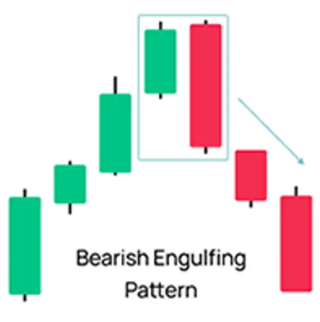

← Volver
Envolvente Bajista (Bearish Engulfing)

Descripción simple
Cuerpo bajista grande que envuelve la vela previa; fuerte señal de reversión bajista.
Ejemplos
- Una gran vela roja cubre la anterior verde tras una subida.
- En gráfico diario en zona de resistencia, la envolvente confirma venta mayor.
Imagen de ejemplo (vela)
Interpretación y consejos
- Confirmar siempre con la vela siguiente o volumen mayor.
- Usar en contexto (soportes/resistencias, tendencia previa).
- Las señales no son 100% fiables; combinar con gestión de riesgo.